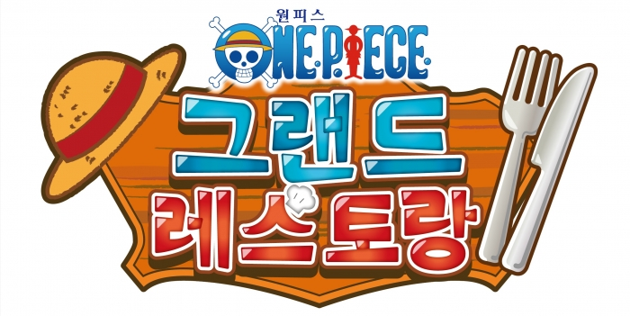
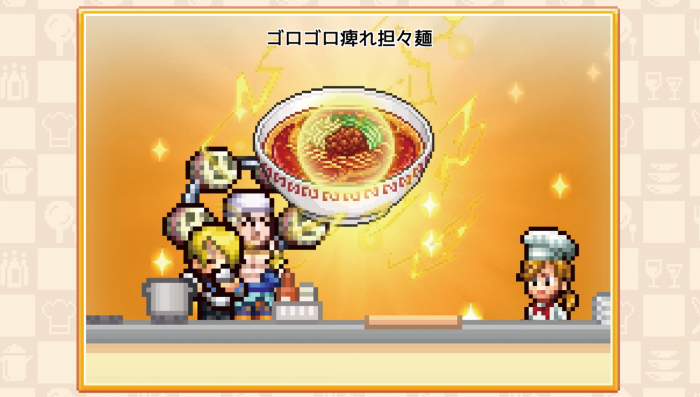

원피스 그랜드 레스토랑 출시일 스위치 10월 22일, 스팀·모바일 10월 23일 예약 구매랑 스팀·앱스토어 가격
원피스 그랜드 레스토랑을 스위치로 할지 스팀이나 모바일로 할지 아직 정하지 못하셨다면, 출시일부터 맞춰 보는 게 순서겠죠. 플랫폼마다 날짜가 다르고 상점에 적힌 날짜까지 조금씩 달라서 헷갈리기 쉬운데요, 한 번에 모아 봤습니다.
원피스 그랜드 레스토랑은 한국어판 기준으로 스위치 2·스위치가 10월 22일 목요일, 스팀·앱스토어·구글 플레이가 하루 뒤인 10월 23일 금요일에 출시돼요. 이 글은 2026년 10월 16일 기준이에요.
루피가 두 팔을 번쩍 든 채 일당이 요리 앞에 모여 있는 대표 컷이에요(©Toei Animation / Bandai Namco)
이미지 출처: 허그리앱 보도 (보도자료 이미지) · 네이버 본문엔 받아서 재업로드 권장
출시일까지 며칠 남았는지 플랫폼별로 보면 어떻게 되나요
2026년 10월 16일 금요일 기준으로 스위치 2·스위치는 6일, 스팀·앱스토어·구글 플레이는 7일 남았어요.
이 일정은 출시 넉 달 전인 6월 10일에 반다이남코 엔터테인먼트 코리아가 국내에 발표한 내용이고, 스위치 쪽 날짜는 게임뷰 보도도 같아요. 날짜만 놓고 보면 콘솔이 하루 먼저 열리는 셈이죠. 스팀과 모바일은 금요일에 열려서 출시 당일부터 토요일 24일, 일요일 25일까지 주말을 이어서 달릴 수 있어요.
| 구분 | 플랫폼 | 출시일 |
|---|---|---|
| 콘솔 | 닌텐도 스위치 2 · 닌텐도 스위치 | 10월 22일 목요일 |
| PC | 스팀 | 10월 23일 금요일 |
| 모바일 | 앱스토어 · 구글 플레이 | 10월 23일 금요일 |
원피스 그랜드 레스토랑은 어떤 게임인가요
카이로소프트가 만든 도트 그래픽 경영 시뮬레이션이고, 원피스 밀짚모자 일당과 바다 위 레스토랑을 꾸려 가는 게임이에요. 한국어도 정식으로 지원되고, 스팀 상점에는 한국어를 포함한 12개 언어가 올라와 있어요.
플레이어가 맡는 역할은 발라티 2호점에 들어온 신입 스태프입니다. 일당과 함께 가게를 키워 가는 구성인데요, 보도자료에 나온 즐길 거리는 이렇게 세 갈래죠.
- 요리 개발은 재료로 새 메뉴를 만드는 방식이고, 상디와 함께 메뉴를 짠다고 해요.
- 가게 꾸미기에 쓸 가구와 건축물, 인테리어 소품이 200종 넘게 준비돼 있어요.
- 캐릭터는 손님과 직원을 합쳐 400명이 넘어요.

밀짚모자와 포크·나이프가 레스토랑 콘셉트를 알려 주는 한국어 로고예요(©Toei Animation / Bandai Namco)
이미지 출처: 허그리앱 보도 (보도자료 이미지) · 네이버 본문엔 받아서 재업로드 권장
스팀과 앱스토어 상점에 적힌 날짜가 국내 발표와 다른데 어느 쪽이 맞나요
국내 발표는 스팀과 앱스토어 모두 10월 23일인데, 10월 16일에 본 스팀 한국 상점은 10월 22일, 앱스토어 한국 상점은 10월 24일로 적혀 있어요.
스팀 상점에는 “2026년 10월 22일 출시 예정”이라는 표기와 함께 “이 게임은 약 6일 후에 잠금 해제될 예정입니다”라는 안내가 붙어 있습니다. 스위치 날짜와 같은 22일이라 더 눈에 걸리죠. 앱스토어는 “2026년 10월 24일 출시 예정”으로 보이는데, 같은 페이지 설명에 “스토어 사전 등록 페이지의 출시 예정일은 시스템상 등록된 날짜로, 정식 출시 예정일이 아닙니다.”라는 문구가 있어요. 앱스토어 쪽은 정식 출시일이 아니라고 앱 설명에 퍼블리셔가 직접 적어 둔 셈이네요. 스팀의 하루 차이는 따로 알려진 이유가 없어서, 이 글은 국내 발표인 10월 23일을 기준으로 씁니다.
| 기준 | 출시 예정일 표기 |
|---|---|
| 국내 발표(스팀·앱스토어 모두) | 10월 23일 금요일 |
| 스팀 한국 상점(10월 16일 기준) | 10월 22일 목요일 |
| 앱스토어 한국 상점(10월 16일 기준) | 10월 24일 토요일 · 정식 출시일이 아니라는 안내 포함 |
상점을 보고 구매하실 예정이라면 출시 직전에 날짜 표기를 한 번 더 열어 보는 걸 추천드려요.
예약 구매와 가격은 플랫폼별로 어디까지 공개됐나요
스팀은 예약 구매가 열려 있고 가격은 19,800원이에요. 한국 앱스토어 상점에도 사전 주문 가격이 올라와 있어요.
예약 구매는 출시 전에 미리 결제해 두고 출시되면 바로 받는 방식인데요, 스팀은 10월 16일 기준으로 에디션 구분 없이 구매 옵션이 하나뿐입니다. 앱스토어 한국 상점에는 “2026년 10월 24일 출시 예정 · ￦20,000” 표기가 있고 사전 주문으로 표시돼 있어요. 두 곳 가격은 200원 차이라, 가격만으로 플랫폼을 가르기는 어렵겠네요.
| 플랫폼 | 가격·예약 표기 |
|---|---|
| 스팀 | 19,800원 · 예약 구매 |
| 앱스토어 | 20,000원 · 사전 주문 표시 |
| 구글 플레이 | 상점 페이지는 열려 있고, 가격과 사전 등록 표기는 확인하지 못함 |
| 스위치 2 · 스위치 | e숍 가격과 예약은 확인하지 못함 |
스팀 한국 상점의 대표 이미지예요(©Toei Animation / Bandai Namco)
이미지 출처: 스팀 한국 상점 – ONE PIECE: Grand Gourmet · 네이버 본문엔 받아서 재업로드 권장
아직 공개되지 않았거나 공식 확인이 안 된 정보는 이렇게 묶어 둘게요.
| 구분 | 공식 확인이 안 된 정보 |
|---|---|
| 스팀 | 예약 특전(없다고 단정하긴 어려움) |
| 스위치 2 | 전용 기능(해외 2차 보도에 관련 얘기가 있으나 공식 확인이 안 돼 이 글에서는 다루지 않음) |
| 전체 플랫폼 | 한국어 음성 여부, 기기 간 데이터 연동, 체험판 |
예약 특전은 스팀 상점에도 국내 발표에도 안내가 없는데, 가격이 확인된 두 곳을 놓고 보면 스팀 예약이 가장 정보가 많은 쪽이에요.
직접 해 본 건 아니지만 기대되는 포인트는 뭔가요
체험판 소식은 확인하지 못했지만 공식 트레일러가 공개돼 있고, 저는 요리가 완성되는 연출이 제일 기대돼요.
6월 발표 때 트레일러가 나왔고, 9월 15일에는 게임플레이 트레일러 “A Day in a Rookie Staff Member's Life”가 공개됐다고 해외 매체가 전했습니다. 저는 직접 플레이해 본 게 아니라서, 아래는 보도자료 컷과 공개된 정보를 보고 느낀 인상이에요.
보도자료 컷을 보면 상디가 요리를 완성하는 순간 큼직한 그릇 그림이 화면 가득 뜨는데요, 도트 화면이라 더 귀엽게 보이네요. 메뉴를 하나 만들 때마다 이런 연출이 나오는지가 저는 제일 궁금해요. 손님과 직원이 400명 넘게 나온다니, 200종 넘는 가구로 가게를 꾸미는 재미와 어떻게 맞물릴지도 기대돼요.

큼직한 요리 그림이 화면 가득 뜨는 연출 컷이에요. 보도자료 이미지이고 화면 속 문구는 일본어예요(©Toei Animation / Bandai Namco)
이미지 출처: 허그리앱 보도 (보도자료 이미지) · 네이버 본문엔 받아서 재업로드 권장
다만 화면 속 문구가 일본어라 일본어판 보도 컷일 수 있어요. 한국어판 화면은 출시 뒤에 따로 봐야겠네요.
공개된 정보만 놓고 좋은 점과 아쉬운 점을 나눠 보면 이래요.
- 좋은 점: 한국어 정식 지원이 확인됐고, 스팀과 앱스토어에서 가격과 예약 표기를 이미 볼 수 있어요. 원피스 일당과 도트 그래픽이라는 조합도 분명하죠.
- 아쉬운 점: 한국어 음성 여부와 스위치·구글 플레이 가격이 아직 확인되지 않았고, 스팀 상점에는 체험판이 보이지 않아서 해 보고 정하기는 어려워요.
원피스를 좋아하고 도트 그래픽 경영 시뮬레이션이 취향이라면 잘 맞을 것 같아요. 전투나 액션 위주의 게임을 찾으신다면 결이 조금 다르겠네요.
출시 당일에는 무엇을 확인하면 되나요
출시 당일에는 구매할 상점의 날짜·가격 표기와 한국어 범위, 두 가지만 보면 충분해요.
- 상점 표기: 구매하려는 상점의 출시일과 가격이 위 표와 같은지 한 번 맞춰 보시면 됩니다.
- 한국어 범위: 정식 지원은 확인됐지만 음성까지인지는 알려진 게 없어서, 음성이 중요하다면 출시 뒤 후기를 참고하시는 편이 좋아요.
자주 묻는 질문
Q. 혼자 즐기는 게임인가요?
스팀 상점에는 싱글 플레이어 게임으로 올라와 있어요. 스팀 기준으로는 혼자 천천히 가게를 키우는 구성이죠.
Q. 누가 만들고 국내에서는 누가 내놓나요?
개발은 카이로소프트이고, 국내 퍼블리싱은 반다이남코 엔터테인먼트 코리아가 맡아요. 스팀 상점에는 개발이 Kairosoft, 배급이 Bandai Namco Entertainment Inc.로 적혀 있어요.
Q. 해외에서 말하는 'ONE PIECE: Grand Gourmet'은 같은 게임인가요?
같은 게임이에요. 스팀 한국 상점 제목이 'ONE PIECE: Grand Gourmet (원피스 그랜드 레스토랑)'으로 두 이름을 함께 써요. 검색할 때 영문 제목으로 나오는 해외 소식은 일정과 가격이 한국 발표와 다를 수 있으니, 이 글의 국내 날짜와는 따로 보시는 게 좋습니다.
Q. 모바일도 유료인가요?
앱스토어 한국 상점에는 20,000원으로 표기돼 있어요. 구글 플레이는 상점 페이지가 열려 있지만 가격 표기는 확인하지 못해서, 두 곳 가격이 같은지는 아직 알 수 없어요.
원피스 그랜드 레스토랑 출시일 정리
스위치로 갈지 스팀으로 갈지는 가격이 확인된 쪽을 기준으로 정하는 편이 마음 편합니다. 스위치 계열은 22일 목요일, 스팀과 모바일은 23일 금요일이니 일정부터 비워 두시면 좋겠죠. 모바일은 앱스토어에 20,000원 표기가 이미 올라와 있고요. 밀짚모자 일당의 레스토랑이 문을 여는 날, 같이 즐겁게 달려 봐요~
참고한 곳 (2026.10.16 기준)
· 허그리앱 – 반다이남코 엔터테인먼트 코리아 발표를 전한 출시 일정 보도
· 게임뷰 – 스위치 출시 일정 보도
· 스팀 한국 상점 – 가격·예약 구매·출시 예정일 표기
· 앱스토어 한국 상점 – 가격·사전 주문 표시·출시 예정일 표기
· 구글 플레이 한국 상점 – 상점 페이지
· 파이널웨폰 – 공식 게임플레이 트레일러 공개 보도